- A. Intro to Version Control Systems
- B. Local Repositories (Narrative Introduction)
- C. Local Repositories (Technical Overview)
- D. Remote Repositories
- E. Git Branching (advanced Git) (optional)
- F. Other Git Features
- G. Remote Repositories (Advanced)
- H. Remote Repository Exercise
- I. Conclusion
- J. Advanced Git Features
Preface: This guide assumes a basic understanding of the command line on your computer. If you’ve never used the command line, consider reading the section B (“Learn to Use the Terminal”) of the lab 1 setup.
A. Intro to Version Control Systems
Version control systems are tools to keep track of changes to files over time.
Version control allows you to view or revert back to previous iterations of
files. Some aspects of version control are actually built into commonly used
applications. Think of the undo command or how you can see the revision
history of a Google document.
In the context of coding, version control systems can track the history of code revisions, from the current state of the code all the way back until it was first tracked. This allows users to reference older versions of their work and share code changes with other people, like fellow developers.
Version control has become a backbone of software development and collaboration in industry. In this class, we will be using Git. Git has excellent documentation so we highly encourage those who are interested to read more about what will be summarized in the rest of this guide.
Intro to Git
Git it a distributed version control system as opposed to a centralized version control system. This means that every developer’s computer stores the entire history (including all old versions) of the entire project! This is rather unlike tools like Dropbox, where old versions are stored on a remote server owned by someone else. We call the entire history of an entire project a “repository”. The fact that the repository is stored locally leads to our ability to use Git locally on our own computers, even without an internet connection.
The lab computers already have Git installed on the command line, and the lab 1 setup guide explains how to install git on your own computer. In addition to the text based interface that we’ll learning to use in this guide, there is also a Git GUI (Graphical User Interface). We will not officially upport usage of the graphical GUI.
B. Local Repositories (Narrative Introduction)
Let’s go through a narrative example of how we might use git. We’ll be using lots of unfamiliar terms and ideas in this story. For a video version of this narrative example, see this video.
Suppose we want to store recipes of various kinds on our computer, and also want to keep track of the history of these recipes as we change them. We might start by creating directories for both seitan and tofu recipes, then creating each recipe using sublime (invoked using the subl command on my computer).
We’re assuming that you’re just reading this, rather than trying the commands
out yourself. If you’d like to follow along by typing everything out, you’ll
need to use a text editor installed on your computer instead of subl.
$ cd /users/sandra
$ mkdir recipes
$ cd recipes
$ mkdir seitan
$ mkdir tofu
$ cd seitan
$ subl smoky_carrot_tahini_seitan_slaw.txt
$ subl boiled_seitan.txt
$ cd ../tofu
$ subl kung_pao_tofu.txt
$ subl basil_ginger_tofu.txt
Now we have four recipes, two for tofu, and two for seitan. To set up our git repository to store the histories of our recipes as they evolve, we’d use the following commands:
$ cd /users/sandra/recipes
$ git init
What git init does is tells the git version control system that we want to track the history of the current directory, in this case “/users/sandra/recipes”. However, at this point NOTHING IS STORED IN THE REPOSITORY. It’s like we’ve purchased a safe, but we haven’t put anything in it yet.
To store everything in the repository, we need to first add files. For example, we might do the following:
git add ./tofu/kung_pao_tofu.txt
Now here’s where git is going to start seeming weird. Even after calling the add command, we still haven’t stored our recipe in the repository (i.e. in the safe).
Instead, what we’ve done is added kung_pao_tofu.txt to the list of files to
track (i.e. to be added to the safe later). The idea is that you might not want
to necessarily track every single file in the /users/sandra/recipes folder, so
the add command tells git which ones it should be tracking. We can see the
effect of this command by using the git status command.
$ git status
In which case, you’d see the following in response:
On branch master
Initial commit
Changes to be committed:
(use "git rm --cached <file>..." to unstage)
new file: tofu/kung_pao_tofu.txt
Untracked files:
(use "git add <file>..." to include in what will be committed)
seitan/
tofu/basil_ginger_tofu.txt
The “changes to be committed” portion of the output lists all files that are
currently being tracked and whose changes are ready be committed (i.e. that are
ready to be put in the safe). We also see that there are some untracked files,
namely the seitan folder, and the tofu/basil_ginger_tofu.txt file. These are
untracked because we have not added them using git add.
Let’s try adding tofu/basil_ginger_tofu.txt, and check the status once more:
$ git add ./tofu/basil_ginger_tofu.txt
$ git status
On branch master
Initial commit
Changes to be committed:
(use "git rm --cached <file>..." to unstage)
new file: tofu/basil_ginger_tofu.txt
new file: tofu/kung_pao_tofu.txt
Untracked files:
(use "git add <file>..." to include in what will be committed)
seitan/
We see that both tofu recipes are tracked, but neither seitan recipe is tracked. We will next use the commit command to stick copies of our tofu recipes into the repository
(i.e. into the safe). To do this, we use the git commit command, as shown below:
$ git commit -m "added tofu recipes"
When executed, the commit command stores a snapshot of all added files (i.e.
current tofu recipes) into the repository. Because we did not use git add on the seitan recipes, they were not included in the snapshot that was placed in the repository. This snapshot of our work is now safe
forever and ever (as long as our computer’s hard drive doesn’t fail or we don’t
damage the secret repository files). The -m command lets us add a message to
the commit, so we can remember what was most important about this commit.
As another analogy, you can think of the whole process like taking a panoramic picture on a camera. The add command captures one portion of the image, and the commit command stitches all “added” items together into a single panorama and throws this panorama into a safe. And just as a panorama only includes things you point at (not the entire 360 degree circle around you), the commit command only ensafes those files which have been added using the add command (and not all files in the recipes directory).
After using commit, you’ll note that git status no longer lists files under “changes to
be committed.” This is similar to how after you finish taking a panoramic photo,
all of the temporary tiny image files are thrown away. The result of git status at this point is shown below:
$ git status
On branch master
Untracked files:
(use "git add <file>..." to include in what will be committed)
seitan/
nothing added to commit but untracked files present (use "git add" to track)
If you go looking at the files in the tofu folder, you’ll see that the commit process did NOT affect the original files on our computer. This is much like how when you take a panoramic photo of your friends, they do not get sucked into a cyber hellscape inside your phone.
We can see evidence of our snapshot by using the special git log command.
$ git log
commit 9f955d85359fc8e4504d7220f13fad34f8f2c62b
Author: Sandra Upson <sandra@Sandras-MacBook-Air.local>
Date: Sun Jan 17 19:06:48 2016 -0800
added tofu recipes
That giant string of characters 9f955d85359fc8e4504d7220f13fad34f8f2c62b is the
ID of the commit. We can use the git show command to peek inside of this
commit.
$ git show 9f955d85359fc8e4504d7220f13fad34f8f2c62b
commit 9f955d85359fc8e4504d7220f13fad34f8f2c62b
Author: Sandra Upson <sandra@Sandras-MacBook-Air.local>
Date: Sun Jan 17 19:06:48 2016 -0800
added tofu recipes
diff --git a/tofu/basil_ginger_tofu.txt b/tofu/basil_ginger_tofu.txt
new file mode 100644
index 0000000..9a56e7a
--- /dev/null
+++ b/tofu/basil_ginger_tofu.txt
@@ -0,0 +1,3 @@
+basil
+ginger
+tofu
diff --git a/tofu/kung_pao_tofu.txt b/tofu/kung_pao_tofu.txt
new file mode 100644 index
0000000..dad9bd9
--- /dev/null
+++ b/tofu/kung_pao_tofu.txt
@@ -0,0 +1,3 @@
+szechuan peppers
+tofu
+peanuts
+kung
+pao
The git show command lets us peer right into the beating heart of a commit. We
don’t expect all of its innards to make sense to you, but you can maybe glean
that the commit is a snapshot of both the names and contents of the files. Note:
You will rarely use the git show command in real life or in 61B, but it’s useful here for peeking inside a commit to get a better sense of what they are.
Suppose we now want to revise our kung pao recipe, because we decided it should have bok choy in it.
$ subl ./tofu/kung_pao_tofu.txt
The changes we just made to kung_pao_tofu.txt are not saved in the repository.
In fact, if we do git status again, we’ll get:
$ git status
On branch master
Changes not staged for commit:
(use "git add <file>..." to update what will be committed)
(use "git checkout -- <file>..." to discard changes in working directory)
modified: tofu/kung_pao_tofu.txt
Untracked files:
(use "git add <file>..." to include in what will be committed)
seitan/
You might think to yourself “OK, we’ll I’ll just do commit again”. However, if we try to commit, git will say that there’s nothing to do:
$ git commit -m "added bok choy"
On branch master
Changes not staged for commit:
modified: tofu/kung_pao_tofu.txt
Untracked files:
seitan/
no changes added to commit
This is because even though kung_pao_tofu.txt is being tracked, we have not
staged our changes for commit. To store our changes in the repository, we first
need to use the add command again, which will stage the changes for commit (or
in other words, we need to take a picture of our new kung_pao_tofu.txt before
we can create the new panorama that we want to put in the safe).
$ git add ./tofu/kung_pao_tofu.txt
$ git status
On branch master
Changes to be committed:
(use "git reset HEAD <file>..." to unstage)
modified: tofu/kung_pao_tofu.txt
Untracked files:
(use "git add <file>..." to include in what will be committed)
seitan/
We see that our change to kung_pao_tofu.txt is now “to be committed”, meaning
that the next commit will include changes to this file. We commit just like
before, and use git log to see the list of all snapshots that have been taken.
$ git commit -m "added bok choy"
$ git log
commit cfcc8cbd88a763712dec2d6bd541b2783fa1f23b
Author: Sandra Upson <sandra@Sandras-MacBook-Air.local>
Date: Sun Jan 17 19:24:45 2016 -0800
added bok choy
commit 9f955d85359fc8e4504d7220f13fad34f8f2c62b
Author: Sandra Upson <sandra@Sandras-MacBook-Air.local>
Date: Sun Jan 17 19:06:48 2016 -0800
added tofu recipes
We now see that there are TWO commits. We could again use show to see what changed in cfcc8cbd88a763712dec2d6bd541b2783fa1f23b, but we won’t in this guide.
Suppose we later decide bok choy is gross. We can roll back our files using the checkout command, as shown below:
$ git checkout 9f955d85359fc8e4504d7220f13fad34f8f2c62b ./recipes/tofu
Think of the checkout command as a robot that goes to our safe, figures out what
the tofu recipe looked like back when the newest panorama was
9f955d85359fc8e4504d7220f13fad34f8f2c62b, and finally rearranges everything in
the actual recipes/tofu folder so that it is exactly like it was at the time
snapshot 9f955d85359fc8e4504d7220f13fad34f8f2c62b was created. If we now look at
the contents of recipes/tofu/kung_pao_tofu.txt after running this command,
we’ll see that bok choy is gone (phew)!
szechuan
peppers
tofu
peanuts
kung
pao
Important: The checkout command does not change the commit history! Or in other words, the safe containing our panoramic photos is entirely unaffected by the checkout command. The entire point of git is to create a log of everything that has EVER happened to our files. In other words, if you took a panoramic photo of your room in 2014 and in 2015 and put them in a safe, then decided in 2016 to put it exactly back like it was in 2014, you would not set the panoramic photo from the year 2015 on fire. Nor would you a picture of it in 2016 magically appear inside your safe. If you wanted to record what it looked like in 2016, you’d need to take another photo (with the appropriate -m message to remember what you just did).
Also important: Make sure to specify a file (or directory) when you use checkout. Otherwise, you’re using a more powerful version of checkout that will probably confuse you. If that should happen, see the 61B git-WTFS (git weird technical failure scenarios).
If we want to actually commit a snapshot of the newest kung pao tofu (which no longer has bok choy), we’d have to commit:
$ git commit -m "went back to the original recipe with no bok choy"
$ git log
commit 4be06747886d0a270bf1d618d58f3273f0219a69
Author: Sandra Upson <sandra@Sandras-MacBook-Air.local>
Date: Sun Jan 17 19:32:37 2016 -0800
went back to the original recipe with no bok choy
commit cfcc8cbd88a763712dec2d6bd541b2783fa1f23b
Author: Sandra Upson <sandra@Sandras-MacBook-Air.local>
Date: Sun Jan 17 19:24:45 2016 -0800
added bok choy
commit 9f955d85359fc8e4504d7220f13fad34f8f2c62b
Author: Sandra Upson <sandra@Sandras-MacBook-Air.local>
Date: Sun Jan 17 19:06:48 2016 -0800
added tofu recipes
We could then use show to see the contents of this most recent commit.
$ git show 4be06747886d0a270bf1d618d58f3273f0219a69
commit 4be06747886d0a270bf1d618d58f3273f0219a69
Author: Sandra Upson <sandra@Sandras-MacBook-Air.local>
Date: Sun Jan 17 19:32:37 2016 -0800
took boy choy out gross
diff --git a/tofu/kung_pao_tofu.txt b/tofu/kung_pao_tofu.txt
index 35a9e71..dad9bd9 100644
--- a/tofu/kung_pao_tofu.txt
+++ b/tofu/kung_pao_tofu.txt
@@ -1,4 +1,3 @@
szechuan
peppers
tofu
peanuts
kung
pao
-bok choy
\ No newline at end of file
Not very important note: The very attentive reader may have noticed that I did
not use git add before I committed the removal of bok choy. This is because of
the funny fact that checkout actually also does an automatic git add on any files that
change as a result of the rollback.
This is the foundation of git. To summarize, using our photo analogy:
git init: Creates a box in which to permanently store panoramic pictures.git add: Takes a temporary photo of one thing that can be assembled into a panoramic photo later.git commit: Assembles all available temporary photos into a panoramic photo. Also destroys all temporary photos.git log: Lists all the panoramic photos we’ve ever taken.git show: Looks at what is in a particular panoramic photo.git checkout: Rearranges files back to how they looked in a given panoramic photo. Does not affect the panormiac photos in your box in any way.
There’s more to learn about git, but before we get there, let’s give a more formal explanation of what we’ve just done.
C. Local Repositories (Technical Overview)
Initializing Local Repositories
Let’s first start off with the local repository. As mentioned above, a repository stores files as well as the history of changes to those files. In order to begin, you must initialize a Git repository by typing the following command into your terminal while in the directory whose history you want to store in a local repository. If you’re using Windows, you should be using a Git Bash terminal window while you type these commands. Reminder: If you’re unsure of how to use a terminal window, consider checking out section B of the lab 1 setup.
$ git init
Extra for experts: When you initialize a Git repository, Git creates a .git
subdirectory. Inside this directory it will store a bunch of metadata, as well
as old the actual snapshots of the files. However, you’ll never need to
actually open the contents of this .git directory, and you should DEFINITELY not
change anything inside directly!
Depending on your operating system, you may not see the folder, because folders
whose names start with “.” are not shown by your OS by defaut. The UNIX command
ls -la will list all directories, including your .git directory, so you can
use this command to check that your repo has been initialized properly.
Tracked vs. Untracked Files
Git repos start off not tracking any files. In order to save the revision history of a file, you need to track it. The Git documentation has an excellent section on recording changes. An image from that section is placed here for your convenience:

As this figure shows, files fall into two main categories:
-
untracked files: These files have either never been tracked or were removed from tracking. Git is not maintaining history for these files.
-
tracked files: These files have been added to the Git repository and can be in various stages of modification: unmodified, modified, or staged.
-
An unmodified file is one that has had no new changes since the last version of the files was added to the Git repo.
-
A modified file is one that is different from the last one Git has saved.
-
A staged file is one that a user has designated as part of a future commit (usually through use of the
git addcommand). We can think of these as files which have lights shining upon them.
-
The following Git command allows you see the status of each file, i.e. whether it is untracked, unmodified, modified, or stageds:
$ git status
The git status command is extremely useful for determining the exact status of
each file in your repository. If you are confused about what has changed and
what needs to be committed, it can remind you of what to do next.
Staging & Committing
A commit is a specific snapshot of your working directory at a particular time. Users must specify what exactly composes the snapshot by staging files.
The add command lets you stage a file (called FILE in the example below).
$ git add FILE
Once you have staged all the files you would like to include in your snapshot, you can commit them as one block with a message.
$ git commit -m MESSAGE
Your message should be descriptive and explain what changes your commit makes to your code. You may want to quickly describe bug fixes, implemented classes, etc. so that your messages are helpful later when looking through your commit log.
In order to see previous commits, you can use the log command:
$ git log
The Git reference guide has a helpful section on viewing commit
history and
filtering log results when searching for particular commits. It might also be
worth checking out gitk, which is a GUI prompted by the command line.
As a side note on development workflow, it is a good idea to commit your code as often as possible. Whenever you make significant (or even minor) changes to your code, make a commit. If you are trying something out that you might not stick with, commit it (perhaps to a different branch, which will be explained below).
Rule of Thumb: If you commit, you can always revert your code or change it. However, if you don’t commit, you won’t be able to get old versions back. So commit often!
Undoing Changes
The Git reference has a great section on undoing things. Please note that while Git revolves around the concept of history, it is possible to lose your work if you revert with some of these undo commands. Thus, be careful and read about the effects of your changes before undoing your work.
-
Unstage a file that you haven’t yet committed:
$ git reset HEAD [file]This will take the file’s status back to modified, leaving changes intact. Don’t worry about this command undoing any work. This command is the equivalent of deleting one of the temporary images that you’re going to combine into a panorama.
Why might we need to use this command? Let’s say you accidentally started tracking a file that you didn’t want to track. (an embarrassing video of yourself, for instance.) Or you were made some changes to a file that you thought you would commit but no longer want to commit quite yet.
- Amend latest commit (changing commit message or add forgotten files):
$ git add [forgotten-file] $ git commit --amendPlease note that this new amended commit will replace the previous commit.
-
Revert a file to its state at the time of the most recent commit:
$ git checkout -- [file]This next command is useful if you would like to actually undo your work. Let’s say that you have modified a certain
filesince committing previously, but you would like your file back to how it was before your modifications.Note: This command is potentially quite dangerous because any changes you made to the file since your last commit will be removed. Use this with caution!
If you’re working on lab 1, it’s time to return and do the git exercise.
D. Remote Repositories
One especially handy feature of git is the ability to store copies of your repository on computers other than your own. Recall that our snapshots are all stored on our computer in a secret folder. That means if our computer is damaged or destroyed, so are all our snapshots.
Suppose we wanted to push our tofu and seitan recipes to another computer, we’d typically use the following command.
$ git push origin master
However, if we tried that out, we’d simply get the message below:
fatal: 'origin' does not appear to be a git repository
fatal: Could not read from remote repository.
Please make sure you have the correct access rights and the repository exists.
This is because we have not yet told git where to send the files. As it happens, there is a for-profit private company called GitHub that has made a business out of storing copies of people’s repositories. Their business model is simple: You pay them to store your repositories (though they let you have free repositories if you leave it open to the world, or if you arrange a special freebie discount like we had to for 61B).
In 61B, we’ll use GitHub to store our repositories. To create a repository on GitHub, you’d probably use their web interface. However, we’ve already done this for you. Your repository will have the same name as your instructional account login.
The most important remote repository commands are listed below, along with a technical description that might not make sense yet. If you’re working on lab 1, head back to the lab to learn more about these commands.
git clone [remote-repo-URL]: Makes a copy of the specified repository, but on your local computer. Also creates a working directory that has files arranged exactly like the most recent snapshot in the download repository. Also records the URL of the remote repository for subsequent network data transfers, and gives it the special remote-repo-name “origin”.git remote add [remote-repo-name] [remote-repo-URL]: Records a new location for network data transfers.git remote -v: Lists all locations for network data transfers.git pull [remote-repo-name] master: Get the most recent copy of the files as seen in remote-repo-namegit push [remote-repo-name] master: Pushes the most recent copy of your files to the remote-repo-name.
E. Git Branching (advanced Git) (optional)
Everything below this line is optional for 61B.
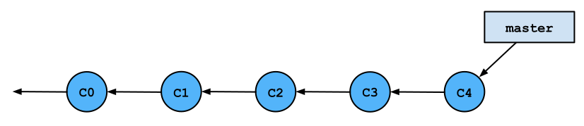
Every command that we’ve covered so far was working with the default branch.
This branch is conventionally called the master branch. However, there are
cases when you may want to create branches in your code.
Branches allow you to keep track of multiple different versions of your work simultaneously. One way to think of branches are as alternate dimensions. Perhaps one branch is the result of choosing to use a linked list while another branch is the result of choosing to use an array.
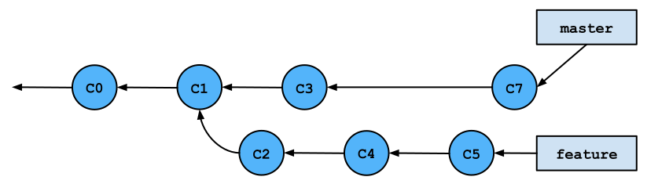
Reasons for Branching
Here are some cases when it may be a good idea to branch.
-
You may want to make a dramatic change to your existing code (called refactoring) but it will break other parts of your project. But you want to be able to simultaneously work on other parts or you have partners, and you don’t want to break the code for them.
-
You want to start working on a new part of the project, but you aren’t sure yet if your changes will work and make it to the final product.
-
You are working with partners and don’t want to mix up your current work with theirs, even if you want to bring your work together later in the future.
Creating a branch will let you keep track of multiple different versions of your code, and you can easily switch between versions and merge branches together once you’ve finished working on a section and want it to join the rest of your code.
An Example Scenario
For example, let’s say that you’ve finished half of a project so far. There is a
difficult part still left to do, and you’re not sure how to do it. Perhaps you
have three different ideas for how to do it, and you’re not sure which will
work. At this point, it might be a good idea to create a branch off of master
and try out your first idea.
-
If your code works, you can merge the branch back to your main code (on the
masterbranch) and submit your project. -
If your code doesn’t work, don’t worry about reverting your code and having to manipulate Git history. You can simply switch back to
master, which won’t have any of your changes, create another branch, and try out your second idea.
This can continue till you figure out the best way to write you code, and you
only need to merge the branches that work back into master in the end.
The Git reference has a section on branching and merging with some figures of how branches are represented in Git’s underlying data structure. It turns out that Git keeps track of commit history as a graph with branch pointers and commits as nodes within the graph. (Hence the tree-related terminology.)
Creating, Deleting, & Switching Branches
A special branch pointer called the HEAD references the branch you currently
have as your working directory. Branching instructions modify branches and
change what your HEAD points to so that you see a different version of your
files.
-
The following command will create a branch off of your current branch.
$ git branch [new-branch-name] -
This command lets you switch from one branch to another by changing which branch your
HEADpointer references.$ git checkout [destination-branch]By default, your initial branch is called
master. It is advised that you stick with this convention. Every other branch, however, can be named whatever you’d like. It’s generally a good idea to call your branch something descriptive likefixing-ai-heuristicsso that you can remember what commits it contains. -
You can combine the previous two commands on creating a new branch and then checking it out with this single command:
$ git checkout -b [new-branch-name] -
You can delete branches with the following command:
$ git branch -d [branch-to-delete] -
You can easily figure out which branch you are on with this command:
$ git branch -vMore particular, the
-vflag will list the last commit on each branch as well.
Merging
There are often times when you’d like to merge one branch into another. For
example, let’s say that you like the work you’ve done on fixing-ai-heuristics.
Your AI is now super-boss, and you’d like your master branch to see the
commits you’ve made on fixing-ai-heuristics and delete the
fixing-ai-heuristics branch.
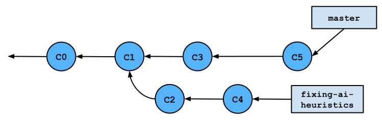
In this case, you should checkout the master branch and merge
fixing-ai-heuristics into master.
$ git checkout master
$ git merge fixing-ai-heuristics
This merge command will create a new commit that joins the two branches
together and change each branch’s pointer to reference this new commit. While
most commits have only one parent commit, this new merge commit has two parent
commits. The commit on the master branch is called its first parent and the
commit on the fixing-ai-heuristics branch is called its second parent.
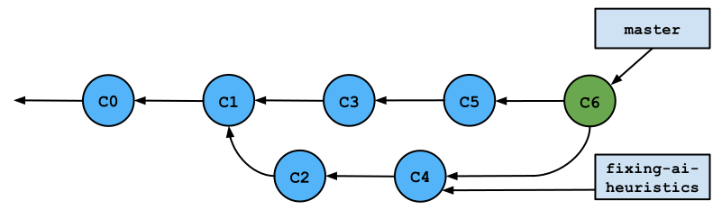
Merge Conflicts
It may happen that two branches you are trying to merge have conflicting information. This can occur if commits on the two branches changed the same files. Git is sophisticated enough to resolve many changes, even when they occur in the same file (though distinct places).
However, there are times that conflicts cannot be resolved by Git because changes impact the same methods/lines of code. In these cases, it will present both changes from the different branches to you as a merge conflict.
Resolving Merge Conflicts
Git will tell you which files have conflicts. You need to open the files that have conflicts and resolve them manually. After doing this, you must commit to complete the merge of the two branches.
The files with conflicts will contain segments that look something like this:
<<<<<<< HEAD
for (int i = 0; i < results.length; i++) {
println(results[i]);
println("FIX ME!");
}
=======
int[] final = int[results.length];
for (int i = 0; i < results.length - 1; i++) {
final[i] = results[i] + 1;
println(final[i]);
}
>>>>>>> fixing-ai-heuristics
Basically, you’ll see two segments with similar pieces of code:
-
The top code snippet is from the branch you originally had checked out when you ran the
mergecommand. It’s calledHEADbecause theHEADpointer was referencing this branch at the time of themerge. Continuing our example above, this code would be from themasterbranch. -
The bottom code snippet is from the branch you were merging into your checked out branch. This is why it shows that the code is from
fixing-ai-heuristics.
Basically, you’ll need to go through all marked sections and pick which snippet of code you’d like to keep.
In the previous example, I like the bottom piece of code better because I just fixed the AI while the top piece still prints “FIX ME!” Thus, I will delete the top segment as well as the extraneous lines to get this:
int[] final = int[results.length];
for (int i = 0; i < results.length - 1; i++) {
final[i] = results[i] + 1;
println(final[i]);
}
Random Note: I have no idea how this code supposedly fixes the AI heuristics. Don’t use it for your project! It is useless, I tell you. Useless!
Doing this for all segments demarcated by conflict-resolution markers resolves your conflict. After doing this for all conflicting files, you can commit. This will complete your merge.
F. Other Git Features
There are tons of other cool Git commands. Unfortunately, we need to continue on to discuss remote repositories. Thus, this segment will just list some other interesting features that you are encouraged to explore in your own time:
-
Stashing allows you to save your changes onto a stack without making a more permanent commit. It is equivalent to picking up your work-in-progress and placing it in a box to get back to later. In the meantime, your desk is now clean.
Why might you want to use this?
-
Your files may be in a disorganized state, and you don’t want to commit yet, but you also don’t want to get rid of your changes.
-
You modified multiple files, but you dislike your changes and you would just like to get things back to how they were after your most recent commit. Then you can
stashyour code and then drop that stash rather than having to manually revert multiple files. (Be careful with this usage!) -
You modified files but accidentally modified them on the wrong branch. Then you can
stashyour changes, switch branches, and unstash your changes so that they are all in the new branch.
-
-
Let’s say you want to do more than change your last commit or drop changes to your files before your most recent commit. What if you want to do something crazy like rewrite history? You can change multiple commit messages, splits one commits into two, and reorder commits.
-
Rebasing changes the parent commit of a specific commit. In doing this, it changes the commits so that it is no longer the same.
Rebasecan be used as an alternative tomergefor integrating changes from one branch to another. It is quite different frommergein thatmergecreates a new commit that has both parent branch commits as parents. Rebasing takes one set of commits from a branch and places them all at the end of the other branch.There are different reasons why you would want to use
mergeversusrebase. One of these reasons is thatrebaseleads to a cleaner history when working with many different branches and team members. -
Perhaps you decide that you want things to be how they were a certain number of commits ago. You can use
resetif you are absolutely sure that you don’t want the last few commits.Resetis quite a nuanced command, so read carefully before attempting use. -
Revertallows you to reverse the changes introduced by certain commits by recording new commits to undo the changes. This is a safer option that simply throwing away past commits. But again, use this with caution. -
Cherry pickallows you to apply the changes introduced by some existing commits. For example, if you have two different branches, and your current branch lacks one or two commits that would be helpful but are only in the other branch, then you cancherry pickto grab those commits without merging or rebasing to get all the commits.
There are far more features and commands not mentioned here. Feel free to explore more and search for answers. There most likely exists a Git command for nearly everything you would want to do.
G. Remote Repositories (Advanced)
Private vs. Public Repos
By default, repositories on GitHub are public, rather than private. This means that anyone on the Internet can view the code in a public repo. For all class assignments, you are required to use private repositories.
Hosting school code in a public repo is a violation of the academic honesty policies of this class (and most other Berkeley EECS classes). Please keep this in mind when using sites like GitHub for collaboration.
You can request an education discount to get free private repos through GitHub Education. Bitbucket is also a great alternative to GitHub as it provides unlimited private code repos.
Adding Remotes
Adding a remote repository means that you are telling git where the repo is located. You do not necessarily have read/write access to every repo you can add. Actually accessing and modifying files in a remote is discussed later and relies on having added the remote.
$ git remote add [short-name] [remote-url]
The remote URL will look something like
https://github.com/berkeley-cs61b/skeleton.git if you are using HTTP or
git@github.com:berkeley-cs61b/skeleton.git if you are using SSH.
By convention, the name of the primary remote is called origin (for original
remote repository). So either of the following two commands would allow me to
add the berkeley-cs61b/skeleton repository as a remote.
$ git remote add origin https://github.com/berkeley-cs61b/skeleton.git
$ git remote add origin git@github.com:berkeley-cs61b/skeleton.git
After adding a remote, all other commands use its associated short name.
Renaming, Deleting, & Listing Remotes
-
You can rename your remote by using this command:
$ git remote rename [old-name] [new-name] -
You can also remove a remote if you are no longer using it:
$ git remote rm [remote-name] -
To see what remotes you have, you can list them. The
-vflag tells you the URL of each remote (not just its name).$ git remote -v
You can read more about working with remotes in the Pro Git book.
Cloning a Remote
There are often remote repos with code that you would like to copy to your own computer. In these cases, you can easily download the entire repo with its commit history by cloning the remote:
$ git clone [remote-url]
$ git clone [remote-url] [directory-name]
The top command will create a directory of the same name as the remote repo. The second command allows you to specify a different name for the copied repository.
When you clone a remote, the cloned remote because associated with your local
repo by the name origin. This is by default because the cloned remote was the
origin for your local repo.
Pushing Commits
You may wish to update the contents of a remote repo by adding some commits that
you made locally. You can do this by pushing your commits:
$ git push [remote-name] [remote-branch]
Note that you will be pushing to the remote branch from the branch your HEAD
pointer is currently referencing. For example, let’s say that I cloned a repo
then made some changes on the master branch. I can give the remote my local
changes with this command:
$ git push origin master
Fetching & Pulling Commits
There are also times that you’d like to get some new commits from a remote that are not currently on your local repo. For example, you may have cloned a remote created by a partner and wish to get his/her newest changes. You can get those changes by fetching or pulling from the remote.
-
fetch: This is analogous to downloading the commits. It does not incorporate them into your own code.$ git fetch [remote-name]Why might you use this? Your partner may have created some changes that you’d like to review but keep separate from your own code. Fetching the changes will only update your local copy of the remote code but not merge the changes into your own code.
For a more particular example, let’s say that your partner creates a new branch on the remote called
fixing-ai-heuristics. You can view that branch’s commits with the following steps:$ git fetch origin $ git branch review-ai-fix origin/fixing-ai-heuristics $ git checkout review-ai-fixThe second command creates a new branch called
review-ai-fixthat tracks thefixing-ai-heuristicsbranch on theoriginremote. -
pull: This is equivalent to afetch + merge. Not only willpullfetch the most recent changes, it will also merge the changes into yourHEADbranch.$ git pull [remote-name] [remote-branch-name]Let’s say that my boss partner has pushed some commits to the
masterbranch of our shared remote that fix our AI heuristics. I happen to know that it won’t break my code, so I can just pull it and merge it into my own code right away.$ git pull origin master
H. Remote Repository Exercise
For this follow-along example, you will need a partner. You will be working with your partner on a remote repository and have to deal with things like merge conflicts. Also note that both of you will need accounts on the same service, whether it be GitHub or Bitbucket.
-
Partner 1 will create a private repository on GitHub or Bitbucket and add Partner 2 as a collaborator. This repo can be called
learning-git.Note: GitHub Education discount requests take some time to process, so it is acceptable to use a public repo for just this lab. For all other assignments, you must use a private repo.
Also, please do not add your partner to your personal repo in the Berkeley-CS61B organization.
-
Partner 2 will create a
READMEfile, commit the file, and push this commit to thelearning-gitremote.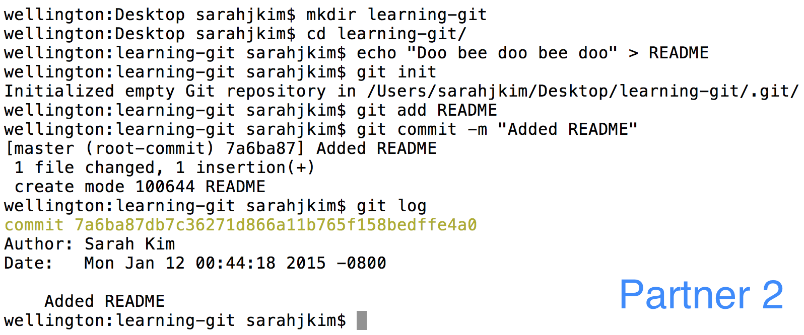
-
Partner 2 will also add the remote that Partner 1 created and push this new commit.
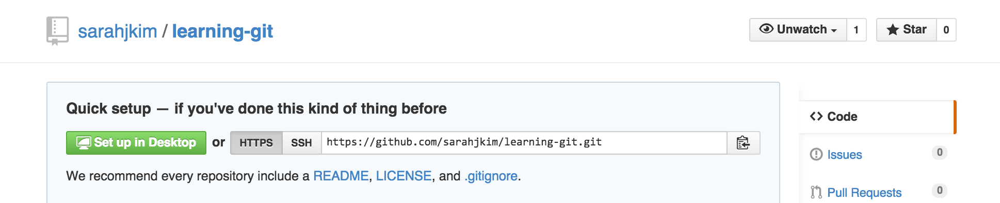
With either GitHub or Bitbucket, you can find the remote URL on the repo’s main page.
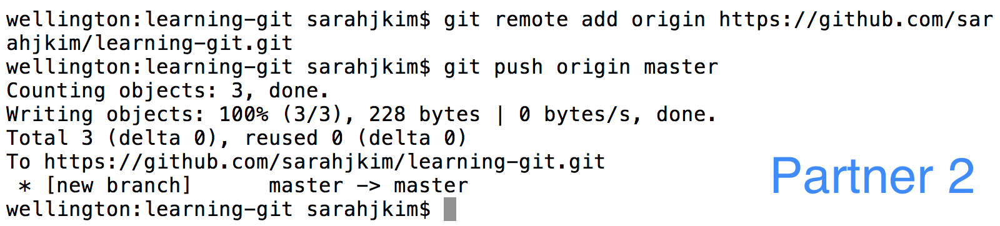
-
Partner 1 will now clone the remote repo to their own machine then add a line to the bottom of README. (Note: At this point, the pictures may get a bit confusing because I’m pretending to be both partners.)

-
Partner 1 will commit this change and push it back to the remote.
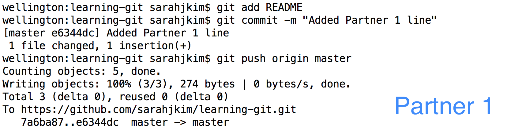
-
Partner 2 will similarly add a line to the bottom of their README and commit this change.
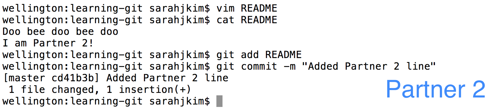
-
Partner 2 will now pull and find that there are merge conflicts.
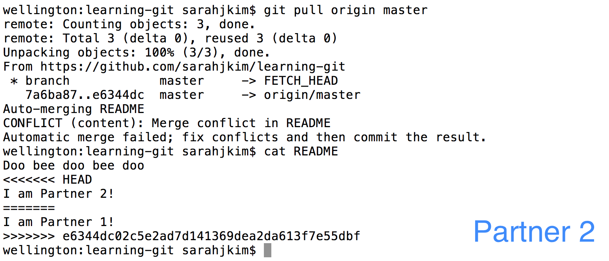
-
Partner 2 should resolve the merge conflicts by rearranging the lines. Then Partner 2 should add
READMEand commit and push to finish.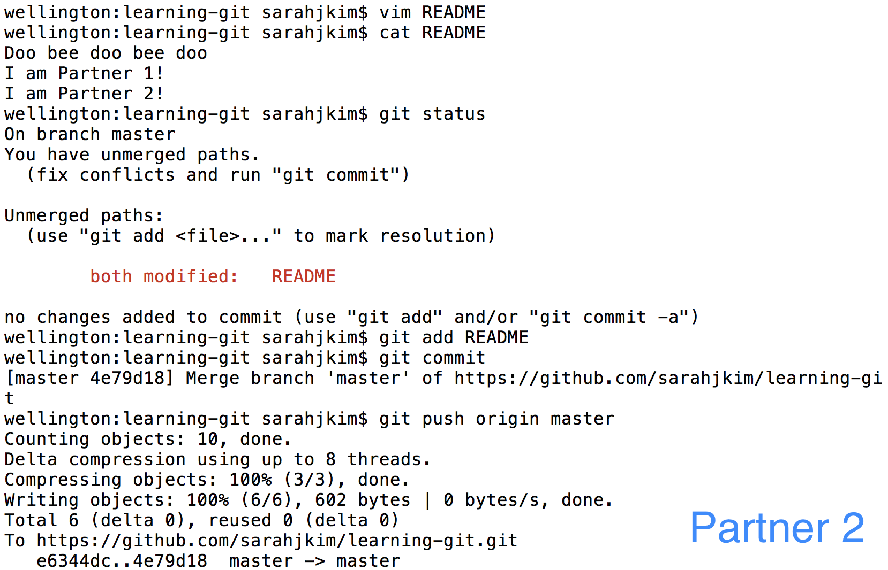
-
Partner 1 can now pull and get two new commits - the added line & the merge commit. Now both partners are up to date.
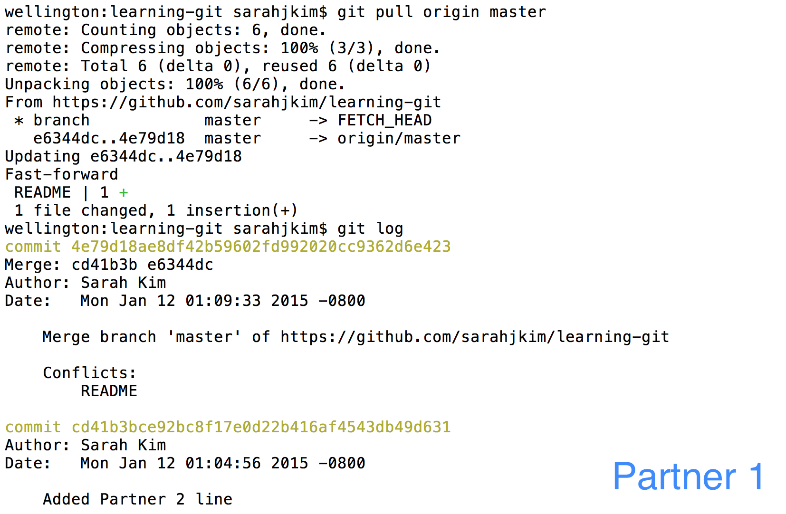
I. Conclusion
More with Remotes
These simple commands to add/remove remotes, push commits, and fetch/pull changes can be combined with all the commands you’ve learned in regards to local repositories to give you a powerful toolkit in working collaboratively with others.
GitHub has some other really cool features that can be helpful for in project development:
Extra Reading
For those of you who found this topic interesting, check out these extra resources! Keep in mind, however, that the best way to learn to use Git effectively is to just start incorporating it into your own coding workflow! Good luck, and have an octotastic day!
-
Git Documentation is really quite good and clear, and there is a great Pro Git book by Scott Chacon.
-
Hacker’s Guide to Git is a very friendly introduction to how Git works. It gives a peek at the structure of commits & branches and explains how some commands work.
-
Learn Git Branching is a fun and interactive tutorial that visualizes Git commands.
J. Advanced Git Features
Here are some more advanced features that might make your life a little easier. Once you get the hang of the basic features of git, you’ll start to notice some common tasks are a bit tedious. Here are some built-in features that you might consider using.
Rebasing
Git is all about collaborative programming, so more often than not, you’ll find yourself dealing with merge-conflicts. In most cases, the changes you’ve made are separated from the conflicting commits such that you can just put your commit right on top of all the new commits. However, git will merge the two versions and add an extra commit letting you know that you merged. This is pretty annoying and leads to a pretty messy commit history. This is where the magic of rebasing comes into play.
When you push changes onto Github and the remote copy has been modified, you’ll be asked to pull in the changes. This is where you usually get a merge-conflict. Instead, pull with the rebase flag:
$ git pull --rebase origin master
It’s as simple as that! The changes from the server will be applied onto your working copy and your commit will be stacked on top.
Squashing Commits
You might find yourself in a situation where you’ve created many small commits with tiny related changes that could really be stored in a single commit. Here, you’ll want to squash your commits using the rebase command. Suppose you have four commits that I want to combine. You would enter the following:
$ git rebase -i HEAD~4
From here, you would be prompted to pick a commit to collapse the other commits into, and pick which commits should be combined:
pick 01d1124 Adding license
pick 6340aaa Moving license into its own file
pick ebfd367 Jekyll has become self-aware.
pick 30e0ccb Changed the tagline in the binary, too.
# Rebase 60709da..30e0ccb onto 60709da
#
# Commands:
# p, pick = use commit
# e, edit = use commit, but stop for amending
# s, squash = use commit, but meld into previous commit
#
# If you remove a line here THAT COMMIT WILL BE LOST.
# However, if you remove everything, the rebase will be aborted.
#
It’s best to pick the topmost commit and squash the rest into it. You can do this by changing the text file to this:
pick 01d1124 Adding license
squash 6340aaa Moving license into its own file
squash ebfd367 Jekyll has become self-aware.
squash 30e0ccb Changed the tagline in the binary, too.
# Rebase 60709da..30e0ccb onto 60709da
#
# Commands:
# p, pick = use commit
# e, edit = use commit, but stop for amending
# s, squash = use commit, but meld into previous commit
#
# If you remove a line here THAT COMMIT WILL BE LOST.
# However, if you remove everything, the rebase will be aborted.
#
Voila! All those tiny commits have collapsed into a single commit and you have a cleaner log file.